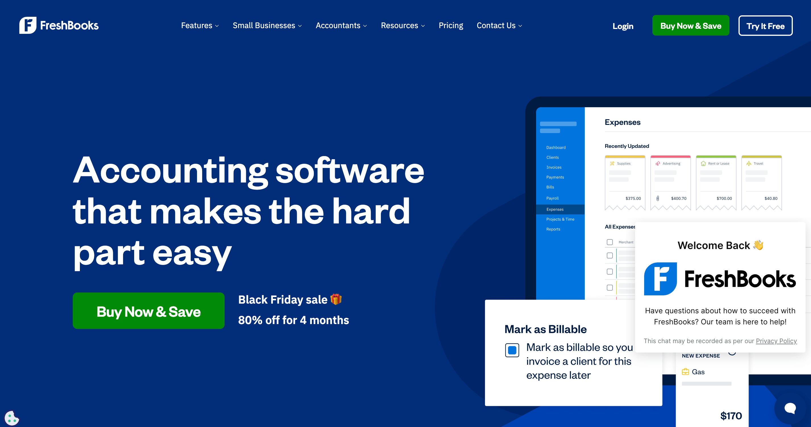
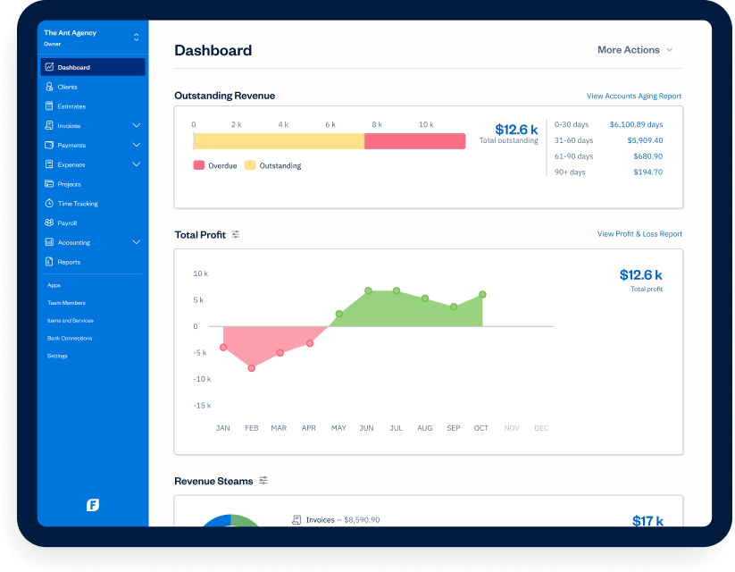
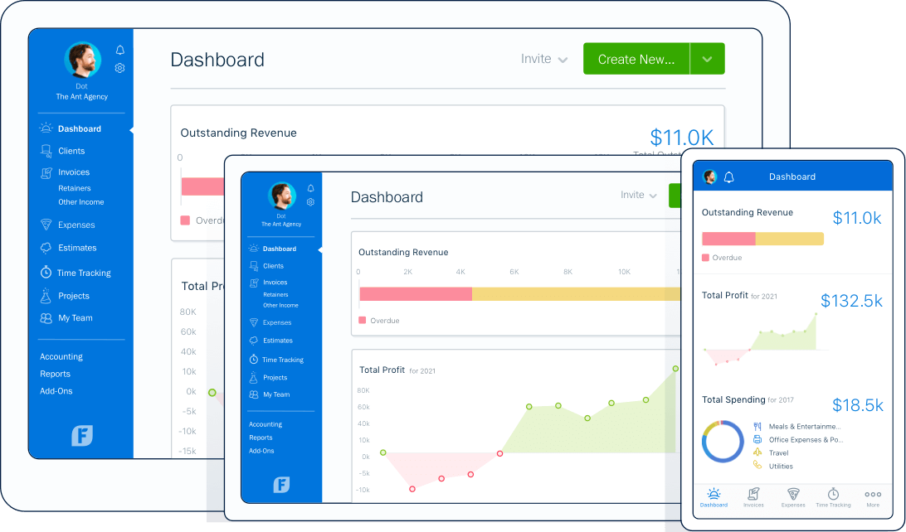

SHORT ON TIME? HERE’S A QUICK SUMMARY
FreshBooks began as a basic invoicing tool and has evolved into a robust, double-entry accounting solution tailored to service-based small and medium-sized businesses (SMBs). It features the most user-friendly interface among the accounting software we've reviewed, and its latest version adds improved reporting, time tracking, and performance enhancements. FreshBooks earned a spot on our list for its innovative, customizable financial tools and exceptional design. While it shines for service-based businesses, Xero remains a more comprehensive option for both product- and service-focused enterprises.
FreshBooks began as a basic invoicing tool and has evolved into a robust, double-entry accounting solution tailored to service-based small and medium-sized businesses (SMBs). It features the most user-friendly interface among the accounting software we've reviewed, and its latest version adds improved reporting, time tracking, and performance enhancements. FreshBooks earned a spot on our list for its innovative, customizable financial tools and exceptional design. While it shines for service-based businesses, Xero remains a more comprehensive option for both product- and service-focused enterprises.

👍 PROS:
- Wide range of powerful features
- Exceptional ease of use and navigation
- Adaptive, context-aware settings
- Integrated tools for project and time management
- Create customized, branded invoices and schedule them to be sent automatically
- Easy-to-use solution tailored for freelancers and very small businesses
- Includes time tracking with options to add billable hours and expenses directly to invoices
- High-quality iOS and Android apps
- Mobile app enables client communication and provides notifications for viewed or overdue invoices
- Phone support available Monday through Friday, 8 a.m. to 7 p.m. Eastern Time
- Excellent value for the price
👎 CONS:
- Limited capabilities in inventory tracking
- Limited options for users with high-volume needs
- Full audit trail access is not available to accountants on any plan
- No batch-invoicing shortcuts for handling multiple invoices efficiently
Get FreshBooks - Simplify your business with powerful accounting software
SEE WHAT USERS HAVE TO SAY
"The software's user-friendly interface and powerful reporting tools have cut down my time spent on report generation to only allow me to spend more time on in depth analysis. Since FreshBooks operates in the cloud, I can access and update reports from anywhere; which has come in really handy for remote work situations."
"FreshBooks is an easy-to-set-up and user-friendly accounting solution with great features that simplify financial management. I've been using it since I started my business over 12 years ago, and it has significantly reduced the time I spend on accounting, allowing me to focus more on growing my business. The platform’s convenience and excellent support have made it an invaluable tool for my operations.”
“FreshBooks provides a great overall experience with a clean and pleasant user interface. True to its name, the platform feels fresh and modern, with an open and easy-to-navigate design that incorporates all the essential features needed in accounting software. I ultimately chose FreshBooks for its unmatched user interface and cost-effectiveness, which made it the best option compared to other accounting solutions.”
WHAT IS FRESHBOOKS?
FreshBooks is a cloud-based accounting software designed primarily for small businesses, freelancers, and self-employed professionals. Established in 2003 and headquartered in Toronto, Canada, it was created to simplify financial management and streamline administrative tasks for entrepreneurs. What began as a simple invoicing solution has grown into a robust platform that supports millions of users worldwide. FreshBooks is particularly known for its intuitive design and user-friendly interface, making it accessible even for individuals without a background in accounting. As a subscription-based service, it can be accessed via desktop and mobile devices, offering flexibility for users to manage their finances anytime, anywhere. Over the years, FreshBooks has gained recognition as a trusted tool for professionals seeking an efficient way to handle their business finances with ease and confidence.
WHO SHOULD USE FRESHBOOKS?
FreshBooks is ideal for small business owners, freelancers, and self-employed professionals who need a straightforward, efficient way to manage their finances. It’s particularly suited for service-based businesses that handle tasks such as invoicing clients, tracking expenses, and managing payments. Creative professionals, consultants, and contractors who often work on projects or bill clients for time and services will find FreshBooks especially helpful due to its user-friendly interface and accessibility.
The platform is also a great choice for entrepreneurs who don’t have a background in accounting but still require a reliable tool to keep their finances organized. With its mobile compatibility, FreshBooks is perfect for users who need to manage their business on the go, making it a practical solution for busy professionals seeking a balance between simplicity and functionality.
WHAT ARE THE FEATURES?
FreshBooks is a comprehensive, cloud-based accounting solution designed to meet the diverse needs of small businesses across various industries, including marketing, legal services, business consulting, trades, home services, and information technology (IT). Its extensive suite of features streamlines financial management and enhances operational efficiency. Here's an overview of its key functionalities:
Accounting and Bookkeeping: FreshBooks simplifies accounting by connecting directly to your business checking and credit card accounts, automatically importing your expenses daily. For more advanced needs, the Premium and Select plans offer double-entry accounting, enabling you to create a chart of accounts and generate detailed reports like a general ledger, balance sheet, and trial balance.
FreshBooks has also introduced features tailored for accountants, such as tools to close out retained earnings and enhanced customization for income mapping. These updates make it an even more robust solution for businesses seeking professional-grade bookkeeping capabilities.
Custom Invoicing: This feature enables you to create professional invoices in seconds, with the ability to save client details for future use, streamlining the invoicing process. It also allows clients to pay via credit card, simplifying payment collection and reducing the chances of late payments.
FreshBooks’ invoicing solution includes several automated features, such as payment follow-up prompts, automatic late fees, and email confirmations, ensuring a hassle-free and efficient billing experience.
Expense Tracking: Easily track your business spending and keep receipts securely stored online for seamless end-of-year accounting. With FreshBooks, you can connect your business bank or credit card to automatically track and record transactions in a fully MTD-compliant manner.
Additionally, you can take advantage of features like marking purchases as billable expenses, allowing you to rebill clients for costs related to materials or supplies effortlessly.
Time Tracking: FreshBooks simplifies your workflow by combining time tracking and invoicing into a single platform. You can track time spent on various projects or clients and effortlessly convert it into accurate invoices with just a click.
For those already using productivity tools like Asana, Basecamp, Trello, or Teamwork, FreshBooks seamlessly integrates with these apps to automatically capture your time, allowing you to maintain your existing workflows without disruption.
Reporting: FreshBooks offers a suite of financial reports, including profit and loss statements, tax summaries, and expense reports, providing users with a clear understanding of their financial health. The platform categorizes credit card transaction fees and provides a summary of all deposits on its dashboard for easy tracking.
Payments Management: With FreshBooks Payments, you can seamlessly sync your account with PayPal or Stripe, making it easy to track payments directly within the platform. You can email invoices to your clients and get real-time updates when they view or pay them. Your clients can pay instantly by clicking a button on the invoice, saving the time and hassle of sending paper invoices through the mail. This feature helps you get paid faster and keeps your cash flow smooth, offering a level of convenience that many other accounting solutions don’t provide.
Project Management: FreshBooks includes collaborative project tools that enhance team productivity. Users can track files, conversations, and time spent on projects in one centralized location, ensuring seamless collaboration and project oversight.
Mileage Tracking: The platform offers an automatic mileage tracker, enabling users to record mileage using their mobile devices while driving. This feature simplifies the process of logging business travel for expense reporting.
Client Management: FreshBooks provides tools for managing client information, facilitating better organization and communication. Users can maintain detailed client records, track interactions, and manage client relationships effectively.
Client Management: FreshBooks provides tools for managing client information, facilitating better organization and communication. Users can maintain detailed client records, track interactions, and manage client relationships effectively.
Mobile Accessibility: Available on both Android and iOS devices, the FreshBooks mobile app allows users to manage their accounting tasks on the go. The app provides access to key features, including invoicing, expense tracking, time tracking, and client communication, ensuring flexibility and continuous access to financial data.
Integrations: FreshBooks integrates seamlessly with a variety of third-party applications, such as PayPal, MailChimp, ZenPayroll, and Basecamp, extending its functionality and allowing users to tailor the platform to their specific business needs.
User Permissions: User permissions are essential for safeguarding against employee accounting fraud, and FreshBooks handles this effectively. You can invite business partners, employees, contractors, and accountants to your account while controlling exactly what they can access. For instance, employees can view their assigned projects, tracked time, and expenses, while contractors can only see and track time on specific projects you grant them access to. Accountants can access your dashboard, reports, expenses, and invoices but are restricted from creating new invoices. This level of control ensures your sensitive financial information remains secure while allowing collaboration.
By offering this comprehensive array of features, FreshBooks empowers small businesses to manage their finances effectively, enhance productivity, and focus more on growth and client satisfaction.
IS IT EASY TO USE?
FreshBooks is widely recognized for its user-friendly interface and intuitive design, making it accessible even for individuals without an accounting background. Users appreciate its simplicity and ease of navigation, which facilitate efficient management of financial tasks. The platform's straightforward layout allows users to perform functions such as invoicing, expense tracking, and time management with minimal effort. Additionally, FreshBooks offers a mobile app that enables users to handle accounting tasks on the go, further enhancing its convenience and accessibility.
USER INTERFACE
FreshBooks stands out with its simple, user-focused design that prioritizes ease of use. The interface is clean, colorful, and full of personality, making it welcoming and intuitive for users of all experience levels. The latest version has further refined the user experience, offering an even more streamlined design compared to the previous Classic version. From day one, FreshBooks has been designed with usability in mind.
The dashboard is thoughtfully organized, with giant, easy-to-spot buttons and a minimalist layout that avoids the clutter of traditional desktop-based accounting software. For most users, navigation is effortless—spending the majority of time on invoices, expenses, and reports is straightforward and efficient.
Creating invoices is particularly user-friendly, with pre-filled fields and customizable options. Users can set standard rates for recurring tasks, like a $200 hourly consultation, and simply select the client and task from a drop-down menu to send an invoice in seconds. At the same time, FreshBooks offers flexibility, allowing users to add line items or customize invoices as needed without being locked into predefined templates.
The client management system is equally easy to use. Adding a new client is as simple as entering their information, after which they are seamlessly integrated into your records. For those managing a high volume of one-time clients, FreshBooks' plan structure may require some creativity to stay within lower-tier plans, but the interface remains accessible and practical for managing client details.
Overall, FreshBooks’ emphasis on simplicity and functionality results in a platform with a short learning curve. There’s no need for extensive training or tutorials to start getting value from the software. Its intuitive design makes it one of the most user-friendly accounting solutions available—a major advantage for small businesses and freelancers alike.
DESKTOP AND MOBILE APPS
Accessible through web browsers on Windows and Mac operating systems, the desktop version of FreshBooks provides you with a comprehensive suite of features, including invoicing, expense tracking, time tracking, and financial reporting. Its user-friendly interface ensures that you can easily navigate and manage your financial tasks without hassle.
With FreshBooks' Android and iOS apps, you have the essential tools and data to manage your accounting tasks on the go. The streamlined dashboard includes an automatic mileage tracker, allowing you to record mileage directly from your phone while driving (a feature also available in QuickBooks Online). You can create, view, and edit full versions of invoices, estimates, and expenses, as well as log hourly billable activities performed away from the office. Client records are always within reach. These apps are visually appealing, highly responsive, and intuitive to navigate, giving you a professional and seamless mobile experience.
IS IT SAFE AND SECURE?
FreshBooks implements robust security measures to ensure the safety and confidentiality of user data:
Data Encryption: All data transmitted between user devices and FreshBooks servers is protected using 256-bit SSL encryption, safeguarding sensitive information during transmission.
Hosting Environment: The platform utilizes Google Cloud Platform (GCP) for its hosting needs, benefiting from GCP's advanced security infrastructure and protocols.
Physical Security: FreshBooks' servers are housed in state-of-the-art data centers equipped with biometric access controls, constant surveillance, redundant power supplies, and robust fire suppression systems to protect against physical threats.
PCI Compliance: For handling cardholder data, FreshBooks adheres to the Payment Card Industry Data Security Standard (PCI DSS) requirements. The company maintains PCI DSS Level 1 compliance, with annual audits conducted by independent third parties to ensure ongoing adherence.
Two-Factor Authentication (2FA): To enhance account security, FreshBooks offers two-factor authentication, adding an extra layer of protection against unauthorized access.
SOC 2 Certification: Demonstrating its commitment to data security, FreshBooks has successfully completed the Service Organization Control (SOC) 2 Type 1 certification, affirming that its systems are designed to keep customer data secure.
These comprehensive security protocols ensure that user data is well-protected, allowing businesses to use FreshBooks with confidence in the platform's commitment to data security and privacy.
IS THERE A FREE VERSION?
FreshBooks does not offer a permanently free version of its software. However, new users can take advantage of a 30-day free trial, which provides access to all features without the need for a credit card. This trial period allows potential customers to fully explore the platform's capabilities before committing to a subscription. After the trial concludes, users must select from one of FreshBooks' subscription plans to continue using the service. Each plan is designed to cater to different business needs and scales, with varying features and client limits. For detailed information on pricing and plan options, you can visit FreshBooks' official pricing page.
HOW MUCH IS IT?
FreshBooks is priced on the higher end compared to other accounting software solutions, but it often offers discounts, so it’s worth inquiring about introductory deals before committing to a plan. The platform provides four pricing tiers based on the number of clients your business manages, with options tailored for different levels of complexity.
Lite ($19/month): Designed for businesses with up to five billable clients, the Lite plan includes essential features like bank account connectivity, time tracking, and online invoice payments. You can send unlimited estimates and invoices and enjoy free access to the FreshBooks mobile app.
Plus ($33/month): Ideal for businesses with up to 50 clients, this is FreshBooks’ most popular plan. It includes all Lite features plus the ability to charge late fees, send recurring invoices and payment reminders, and create proposals. You can also run financial reports, including double-entry accounting reports like the general ledger, trial balance, and chart of accounts. This plan allows you to invite your accountant to collaborate at no additional cost.
Premium ($60/month): For businesses with unlimited clients, the Premium plan offers everything in the Plus tier with additional reporting and client-tracking features, making it ideal for scaling operations.
Select (Custom Pricing): The Select plan caters to larger businesses and includes personalized support, such as a dedicated account manager, a private customer support line, and custom onboarding. Pricing for this tier is tailored to your specific needs and requires contacting FreshBooks for a quote.
Additional Costs and Notes:
Annual Billing Discounts: Save 10% by opting for annual billing instead of monthly payments.
Extra Users: Each additional user (business partners, contractors, or employees) costs $11 per month.
Payment Processing: FreshBooks Payments charges 2.9% plus $0.30 per transaction. Alternatively, you can integrate a Stripe account for payment processing.
Advanced Payments: This add-on provides a virtual terminal for phone and in-person payments, costing $20 per month, with a fee of 3.5% plus $0.30 per transaction. Clients can also authorize recurring payments with this service.
CUSTOMER SUPPORT
Many cloud-based software companies fall short on customer service, but FreshBooks stands out with its robust support resources. You can reach their team through multiple channels, including phone (with a dedicated support number for Select subscribers), email, and live chat. For those who prefer self-service, the platform offers an extensive online knowledge base, along with webinars, blog posts, and free e-books that provide in-depth guidance on using the software. FreshBooks’ commitment to customer satisfaction is reflected in its Trustpilot score of 4.3 out of 5, with 64% of users awarding the customer service a perfect five-star rating.
Additionally, the FreshBooks website features an automated chatbot for basic inquiries. In our testing, the chatbot handled questions about pricing well but struggled with more complex topics. For detailed assistance, prospective customers can easily contact a sales representative via email or phone. This range of options ensures that users have access to the support they need, whether they prefer quick answers or more personalized guidance.
BOTTOMLINE
The latest version of FreshBooks impresses with its polished design and strong performance. Its longevity in the market is a clear advantage, as the developers have honed the platform into a seamless and intuitive accounting solution. Setting up and configuring FreshBooks is a breeze, thanks to its straightforward menu system and clearly organized sections. Despite its simplicity, the platform packs plenty of power to handle demanding tasks efficiently. Overall, FreshBooks is an excellent choice for managing your accounting needs, offering a user-friendly experience that is both reliable and, depending on your requirements, highly cost-effective.
"The software's user-friendly interface and powerful reporting tools have cut down my time spent on report generation to only allow me to spend more time on in depth analysis. Since FreshBooks operates in the cloud, I can access and update reports from anywhere; which has come in really handy for remote work situations."
"FreshBooks is an easy-to-set-up and user-friendly accounting solution with great features that simplify financial management. I've been using it since I started my business over 12 years ago, and it has significantly reduced the time I spend on accounting, allowing me to focus more on growing my business. The platform’s convenience and excellent support have made it an invaluable tool for my operations.”
“FreshBooks provides a great overall experience with a clean and pleasant user interface. True to its name, the platform feels fresh and modern, with an open and easy-to-navigate design that incorporates all the essential features needed in accounting software. I ultimately chose FreshBooks for its unmatched user interface and cost-effectiveness, which made it the best option compared to other accounting solutions.”
WHAT IS FRESHBOOKS?
FreshBooks is a cloud-based accounting software designed primarily for small businesses, freelancers, and self-employed professionals. Established in 2003 and headquartered in Toronto, Canada, it was created to simplify financial management and streamline administrative tasks for entrepreneurs. What began as a simple invoicing solution has grown into a robust platform that supports millions of users worldwide. FreshBooks is particularly known for its intuitive design and user-friendly interface, making it accessible even for individuals without a background in accounting. As a subscription-based service, it can be accessed via desktop and mobile devices, offering flexibility for users to manage their finances anytime, anywhere. Over the years, FreshBooks has gained recognition as a trusted tool for professionals seeking an efficient way to handle their business finances with ease and confidence.
WHO SHOULD USE FRESHBOOKS?
FreshBooks is ideal for small business owners, freelancers, and self-employed professionals who need a straightforward, efficient way to manage their finances. It’s particularly suited for service-based businesses that handle tasks such as invoicing clients, tracking expenses, and managing payments. Creative professionals, consultants, and contractors who often work on projects or bill clients for time and services will find FreshBooks especially helpful due to its user-friendly interface and accessibility.
The platform is also a great choice for entrepreneurs who don’t have a background in accounting but still require a reliable tool to keep their finances organized. With its mobile compatibility, FreshBooks is perfect for users who need to manage their business on the go, making it a practical solution for busy professionals seeking a balance between simplicity and functionality.
WHAT ARE THE FEATURES?
FreshBooks is a comprehensive, cloud-based accounting solution designed to meet the diverse needs of small businesses across various industries, including marketing, legal services, business consulting, trades, home services, and information technology (IT). Its extensive suite of features streamlines financial management and enhances operational efficiency. Here's an overview of its key functionalities:
Accounting and Bookkeeping: FreshBooks simplifies accounting by connecting directly to your business checking and credit card accounts, automatically importing your expenses daily. For more advanced needs, the Premium and Select plans offer double-entry accounting, enabling you to create a chart of accounts and generate detailed reports like a general ledger, balance sheet, and trial balance.
FreshBooks has also introduced features tailored for accountants, such as tools to close out retained earnings and enhanced customization for income mapping. These updates make it an even more robust solution for businesses seeking professional-grade bookkeeping capabilities.
Custom Invoicing: This feature enables you to create professional invoices in seconds, with the ability to save client details for future use, streamlining the invoicing process. It also allows clients to pay via credit card, simplifying payment collection and reducing the chances of late payments.
FreshBooks’ invoicing solution includes several automated features, such as payment follow-up prompts, automatic late fees, and email confirmations, ensuring a hassle-free and efficient billing experience.
Expense Tracking: Easily track your business spending and keep receipts securely stored online for seamless end-of-year accounting. With FreshBooks, you can connect your business bank or credit card to automatically track and record transactions in a fully MTD-compliant manner.
Additionally, you can take advantage of features like marking purchases as billable expenses, allowing you to rebill clients for costs related to materials or supplies effortlessly.
Time Tracking: FreshBooks simplifies your workflow by combining time tracking and invoicing into a single platform. You can track time spent on various projects or clients and effortlessly convert it into accurate invoices with just a click.
For those already using productivity tools like Asana, Basecamp, Trello, or Teamwork, FreshBooks seamlessly integrates with these apps to automatically capture your time, allowing you to maintain your existing workflows without disruption.
Reporting: FreshBooks offers a suite of financial reports, including profit and loss statements, tax summaries, and expense reports, providing users with a clear understanding of their financial health. The platform categorizes credit card transaction fees and provides a summary of all deposits on its dashboard for easy tracking.
Payments Management: With FreshBooks Payments, you can seamlessly sync your account with PayPal or Stripe, making it easy to track payments directly within the platform. You can email invoices to your clients and get real-time updates when they view or pay them. Your clients can pay instantly by clicking a button on the invoice, saving the time and hassle of sending paper invoices through the mail. This feature helps you get paid faster and keeps your cash flow smooth, offering a level of convenience that many other accounting solutions don’t provide.
Project Management: FreshBooks includes collaborative project tools that enhance team productivity. Users can track files, conversations, and time spent on projects in one centralized location, ensuring seamless collaboration and project oversight.
Mileage Tracking: The platform offers an automatic mileage tracker, enabling users to record mileage using their mobile devices while driving. This feature simplifies the process of logging business travel for expense reporting.
Client Management: FreshBooks provides tools for managing client information, facilitating better organization and communication. Users can maintain detailed client records, track interactions, and manage client relationships effectively.
Client Management: FreshBooks provides tools for managing client information, facilitating better organization and communication. Users can maintain detailed client records, track interactions, and manage client relationships effectively.
Mobile Accessibility: Available on both Android and iOS devices, the FreshBooks mobile app allows users to manage their accounting tasks on the go. The app provides access to key features, including invoicing, expense tracking, time tracking, and client communication, ensuring flexibility and continuous access to financial data.
Integrations: FreshBooks integrates seamlessly with a variety of third-party applications, such as PayPal, MailChimp, ZenPayroll, and Basecamp, extending its functionality and allowing users to tailor the platform to their specific business needs.
User Permissions: User permissions are essential for safeguarding against employee accounting fraud, and FreshBooks handles this effectively. You can invite business partners, employees, contractors, and accountants to your account while controlling exactly what they can access. For instance, employees can view their assigned projects, tracked time, and expenses, while contractors can only see and track time on specific projects you grant them access to. Accountants can access your dashboard, reports, expenses, and invoices but are restricted from creating new invoices. This level of control ensures your sensitive financial information remains secure while allowing collaboration.
By offering this comprehensive array of features, FreshBooks empowers small businesses to manage their finances effectively, enhance productivity, and focus more on growth and client satisfaction.

IS IT EASY TO USE?
FreshBooks is widely recognized for its user-friendly interface and intuitive design, making it accessible even for individuals without an accounting background. Users appreciate its simplicity and ease of navigation, which facilitate efficient management of financial tasks. The platform's straightforward layout allows users to perform functions such as invoicing, expense tracking, and time management with minimal effort. Additionally, FreshBooks offers a mobile app that enables users to handle accounting tasks on the go, further enhancing its convenience and accessibility.
USER INTERFACE
FreshBooks stands out with its simple, user-focused design that prioritizes ease of use. The interface is clean, colorful, and full of personality, making it welcoming and intuitive for users of all experience levels. The latest version has further refined the user experience, offering an even more streamlined design compared to the previous Classic version. From day one, FreshBooks has been designed with usability in mind.
The dashboard is thoughtfully organized, with giant, easy-to-spot buttons and a minimalist layout that avoids the clutter of traditional desktop-based accounting software. For most users, navigation is effortless—spending the majority of time on invoices, expenses, and reports is straightforward and efficient.
Creating invoices is particularly user-friendly, with pre-filled fields and customizable options. Users can set standard rates for recurring tasks, like a $200 hourly consultation, and simply select the client and task from a drop-down menu to send an invoice in seconds. At the same time, FreshBooks offers flexibility, allowing users to add line items or customize invoices as needed without being locked into predefined templates.
The client management system is equally easy to use. Adding a new client is as simple as entering their information, after which they are seamlessly integrated into your records. For those managing a high volume of one-time clients, FreshBooks' plan structure may require some creativity to stay within lower-tier plans, but the interface remains accessible and practical for managing client details.
Overall, FreshBooks’ emphasis on simplicity and functionality results in a platform with a short learning curve. There’s no need for extensive training or tutorials to start getting value from the software. Its intuitive design makes it one of the most user-friendly accounting solutions available—a major advantage for small businesses and freelancers alike.
DESKTOP AND MOBILE APPS
Accessible through web browsers on Windows and Mac operating systems, the desktop version of FreshBooks provides you with a comprehensive suite of features, including invoicing, expense tracking, time tracking, and financial reporting. Its user-friendly interface ensures that you can easily navigate and manage your financial tasks without hassle.
With FreshBooks' Android and iOS apps, you have the essential tools and data to manage your accounting tasks on the go. The streamlined dashboard includes an automatic mileage tracker, allowing you to record mileage directly from your phone while driving (a feature also available in QuickBooks Online). You can create, view, and edit full versions of invoices, estimates, and expenses, as well as log hourly billable activities performed away from the office. Client records are always within reach. These apps are visually appealing, highly responsive, and intuitive to navigate, giving you a professional and seamless mobile experience.

IS IT SAFE AND SECURE?
FreshBooks implements robust security measures to ensure the safety and confidentiality of user data:
These comprehensive security protocols ensure that user data is well-protected, allowing businesses to use FreshBooks with confidence in the platform's commitment to data security and privacy.
IS THERE A FREE VERSION?
FreshBooks does not offer a permanently free version of its software. However, new users can take advantage of a 30-day free trial, which provides access to all features without the need for a credit card. This trial period allows potential customers to fully explore the platform's capabilities before committing to a subscription. After the trial concludes, users must select from one of FreshBooks' subscription plans to continue using the service. Each plan is designed to cater to different business needs and scales, with varying features and client limits. For detailed information on pricing and plan options, you can visit FreshBooks' official pricing page.
HOW MUCH IS IT?
FreshBooks is priced on the higher end compared to other accounting software solutions, but it often offers discounts, so it’s worth inquiring about introductory deals before committing to a plan. The platform provides four pricing tiers based on the number of clients your business manages, with options tailored for different levels of complexity.
Lite ($19/month): Designed for businesses with up to five billable clients, the Lite plan includes essential features like bank account connectivity, time tracking, and online invoice payments. You can send unlimited estimates and invoices and enjoy free access to the FreshBooks mobile app.
Plus ($33/month): Ideal for businesses with up to 50 clients, this is FreshBooks’ most popular plan. It includes all Lite features plus the ability to charge late fees, send recurring invoices and payment reminders, and create proposals. You can also run financial reports, including double-entry accounting reports like the general ledger, trial balance, and chart of accounts. This plan allows you to invite your accountant to collaborate at no additional cost.
Premium ($60/month): For businesses with unlimited clients, the Premium plan offers everything in the Plus tier with additional reporting and client-tracking features, making it ideal for scaling operations.
Select (Custom Pricing): The Select plan caters to larger businesses and includes personalized support, such as a dedicated account manager, a private customer support line, and custom onboarding. Pricing for this tier is tailored to your specific needs and requires contacting FreshBooks for a quote.
Additional Costs and Notes:
CUSTOMER SUPPORT
Many cloud-based software companies fall short on customer service, but FreshBooks stands out with its robust support resources. You can reach their team through multiple channels, including phone (with a dedicated support number for Select subscribers), email, and live chat. For those who prefer self-service, the platform offers an extensive online knowledge base, along with webinars, blog posts, and free e-books that provide in-depth guidance on using the software. FreshBooks’ commitment to customer satisfaction is reflected in its Trustpilot score of 4.3 out of 5, with 64% of users awarding the customer service a perfect five-star rating.
Additionally, the FreshBooks website features an automated chatbot for basic inquiries. In our testing, the chatbot handled questions about pricing well but struggled with more complex topics. For detailed assistance, prospective customers can easily contact a sales representative via email or phone. This range of options ensures that users have access to the support they need, whether they prefer quick answers or more personalized guidance.
BOTTOMLINE
The latest version of FreshBooks impresses with its polished design and strong performance. Its longevity in the market is a clear advantage, as the developers have honed the platform into a seamless and intuitive accounting solution. Setting up and configuring FreshBooks is a breeze, thanks to its straightforward menu system and clearly organized sections. Despite its simplicity, the platform packs plenty of power to handle demanding tasks efficiently. Overall, FreshBooks is an excellent choice for managing your accounting needs, offering a user-friendly experience that is both reliable and, depending on your requirements, highly cost-effective.
Get FreshBooks - Simplify your business with powerful accounting software